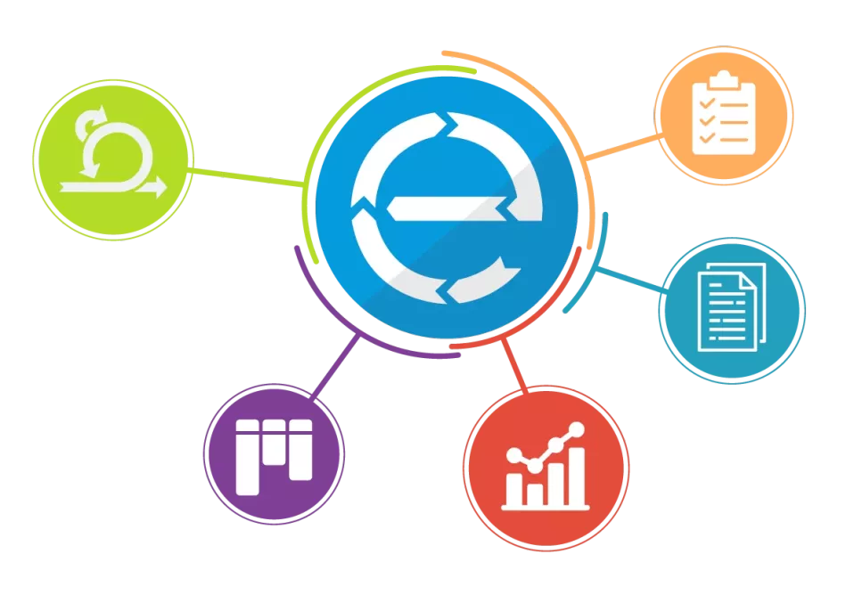
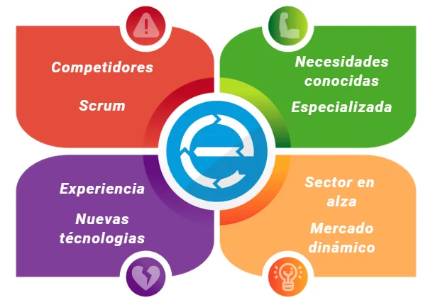

Sprint 1: Scrume v1
Sprint 2: Scrume v2
Sprint 3: Scrume v3
Sprint 4: Scrume v4
Scrume es una herramienta con la cuál puedes aplicar la metodología Scrum a un proyecto informático de una forma completa, sencilla y asistida.
Aquí podras mantener el ritmo que impone la metodología ágil sin perder nada de la documentación que Scrum genera en el transcurso de los Sprints.
Tablero Kanban, lista de tareas automatizadas, recordatorios de los procesos de Scrum, vinculación con Git.
Con Scrume tendrás el poder de un Scrum Master en tu mano.
Como en todas las empresas, en Scrume tenemos muy claros cuáles son nuestros límites y nuestras oportunidades
En Scrume tenemos muy presente a nuestros clientes y tenemos planes personalizados para los colectivos que más lo necesitan.
Podemos diferenciar tres tipos de clientes, los alumnos, es decir, los futuros profesionales; los profesionales del sector y el sector educativo.
Plan Basic - Un plan de prueba en el cual podrás llevar a cabo un sprint con un tablero.
Plan Standard - Con este plan podrás generar hasta 3 proyectos con sus respectivos tableros durante los sprints necesarios.
Plan Complete - Todas nuestras funcionalidades para sacar el máximo rendimiento a tus equipos.
Si tienes alguna sugerencia, duda o simplemente aportar tu granito de arena... Nos puedes encontrar en